{kind=link}
Week 8 Hardware
- 30 seconds script finished
- (Build Script)
- Progress Report
- Finished Placard
- Cut the trace from Kristian's diagram here 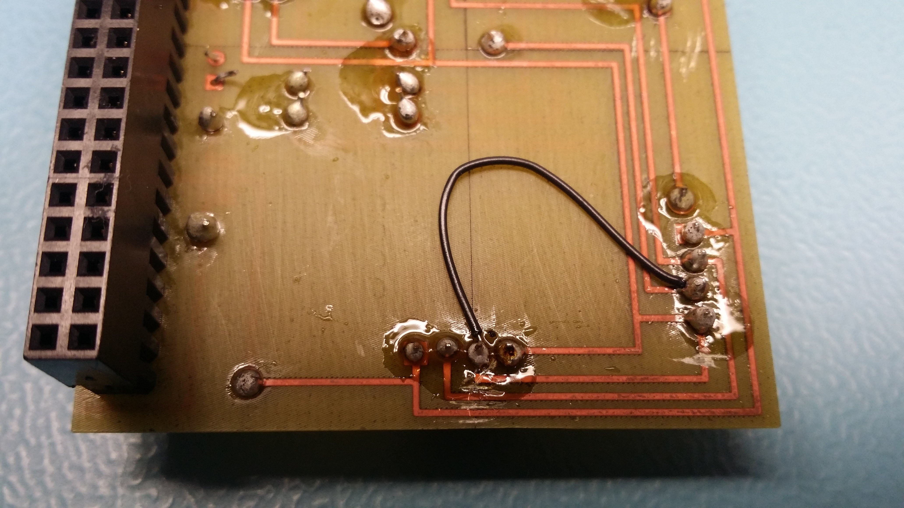
- Accidentally blew up one of my Micro servo motor. Now i'm waiting for the new parts to arrive.

A detailed instructions on how to build the PiRover
| Equipement | Quantity | Cost with tax |
|---|---|---|
| Raspberry Pi 3 Starter Kit | 1 | $112.99 |
| Electronic Learning kit for RaspPi | 1 | $19.05 |
| 10000mAh Portable Power Bank | 1 | $23.72 |
| Micro Servo Motor FS90R | 2 | $21.00 |
| Ultrasonic Sensor HC-SR04 | 1 | $5.00 |
| Laserut Chasis from Humber | 1 | $0 |
| 3D printed wheels from Humber | 1 | $0 |
| Total after tax | $181.67 |
| To do | Time Required |
|---|---|
| Raspberry pi setup/power up | 30 mins |
| Parts Assembly | 30 mins |
| Project Wiring | 15~30 mins |
| Sensor mount and setup(wiring) | 15 mins |
| Code setup for raspberry pi | 30 mins |
| *OPTIONAL* Android application setup. Download and install from playstore. | 10 mins |
Gather all the parts needed for the project. Click here for reference
Wiring
Optional. Unfortunately, there is no PCB made at the moment
Powering up your raspberry pi
In this week, progress report and in class demonstration of the sensor is due.
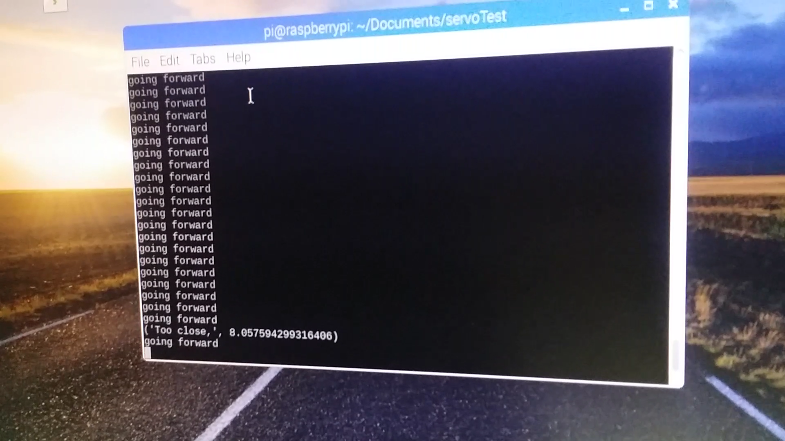 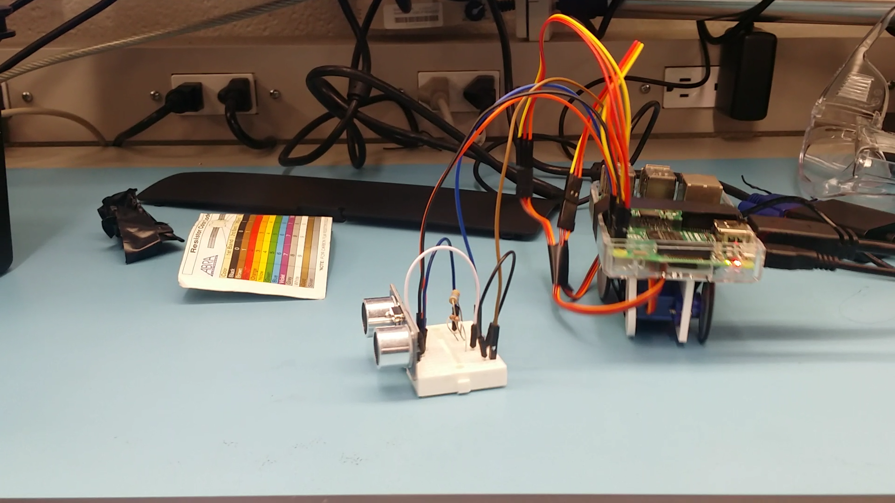- Project is on schedule. I was able to get the motors and ultrasonic sensor to work together. I will demonstrate the HC-SR04 ultrasonic sensor in class. I have implemented codes for the motor and sensor to work together. When the sensor detects the distance below 15cm, motors should reverse and turn left and print "Too close" in the terminal.
Problem - current problem at the moment is the sensor's stability. Sometimes the sensor will not work or measure the distance. The suspected cause of this, based on my observation, is the wires and resistors get re-adjusted whenever I put it back in the toolbox.
- In week 8, I accidentally burnt one of my microservos, and immediately oredered the same part online which cost me extra $11 (tax and shipping included).
So far all the items that were purchased for this project are within the budget
- Accidentally blew up one of my Micro servo motor. Now i'm waiting for the new parts to arrive.

 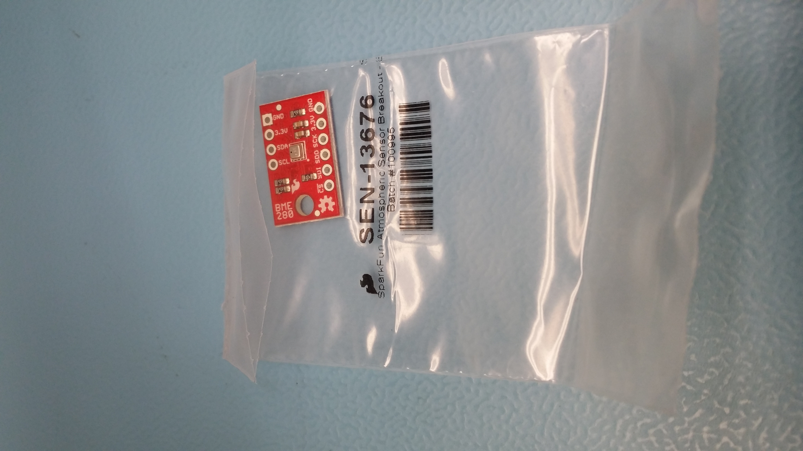
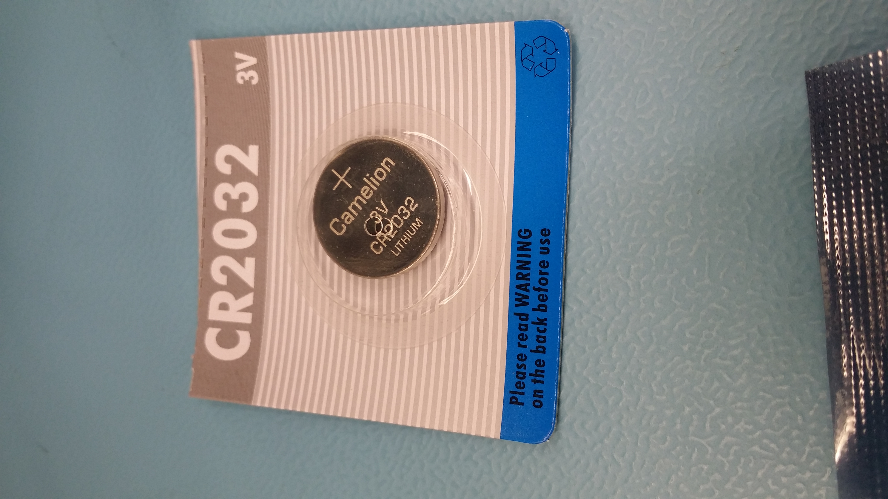
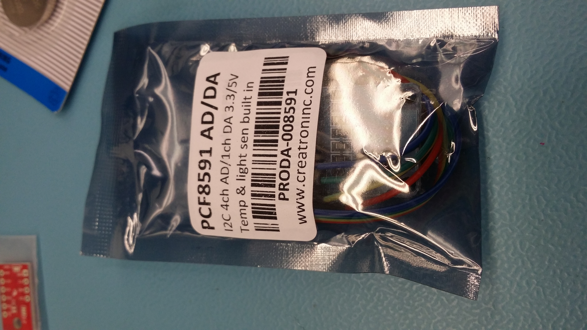
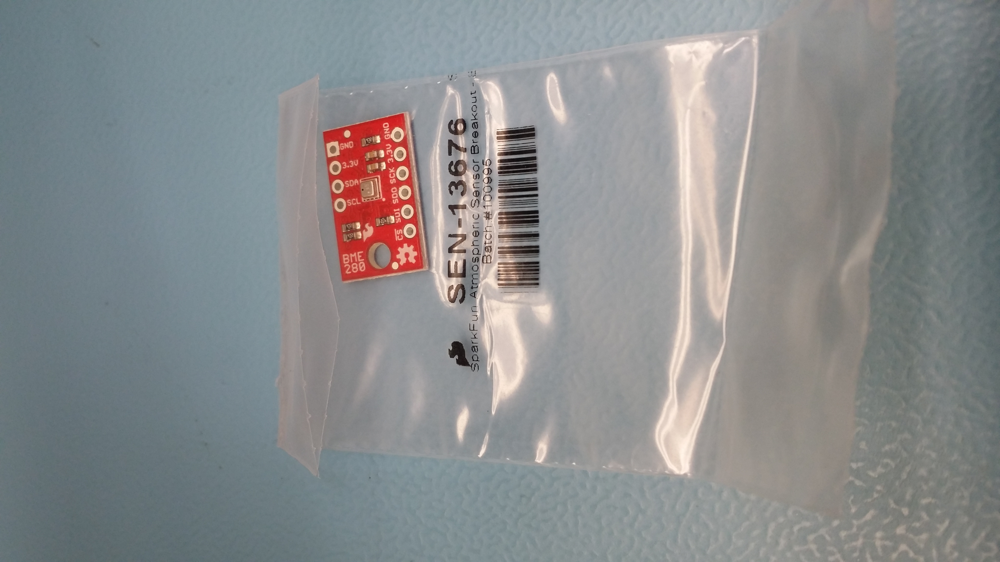
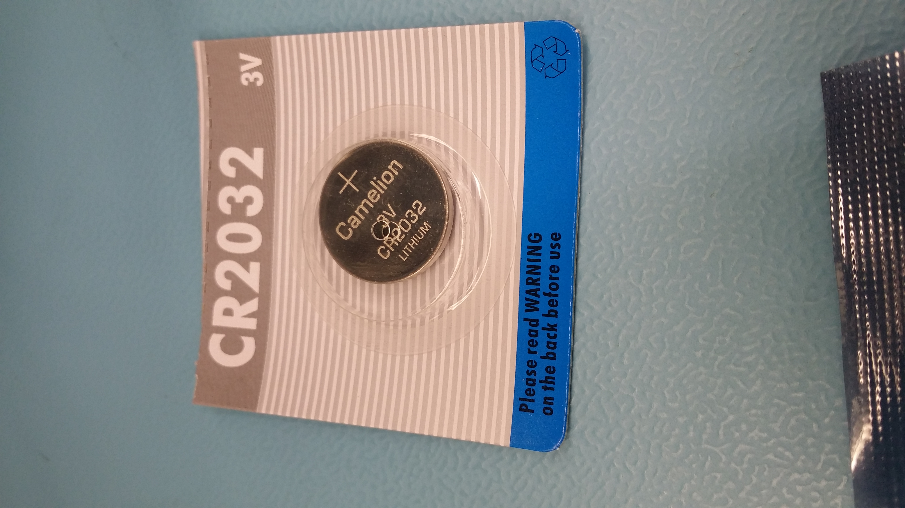
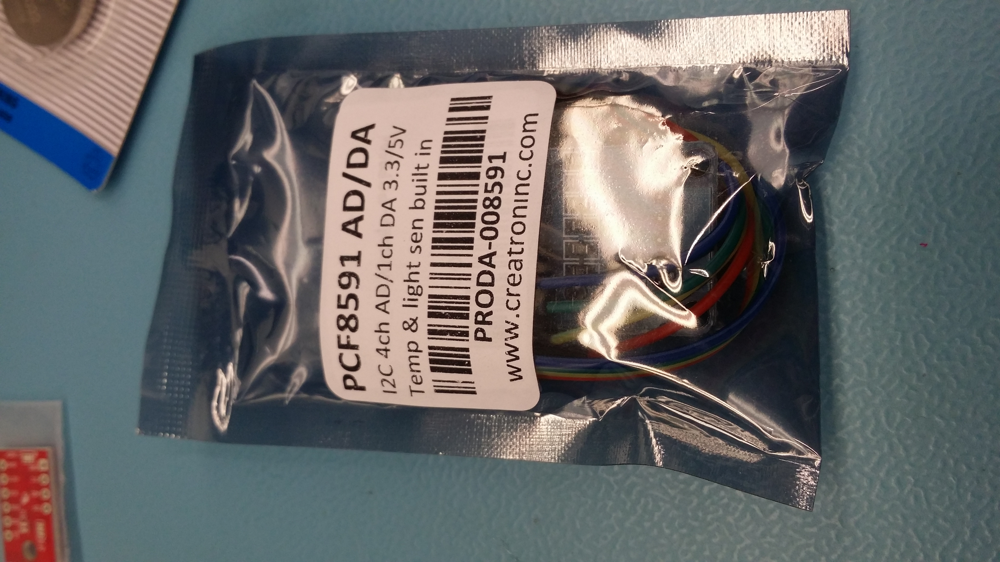
 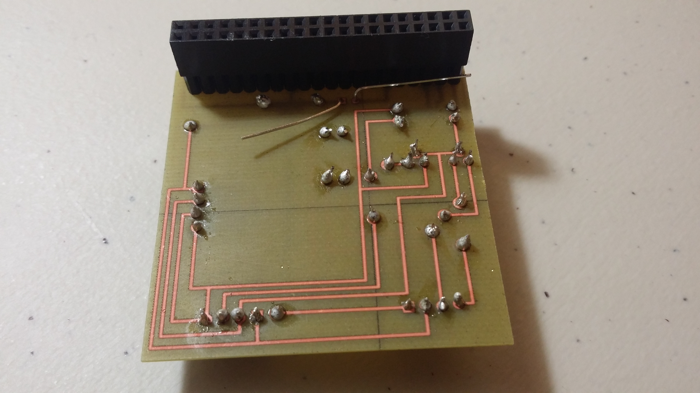
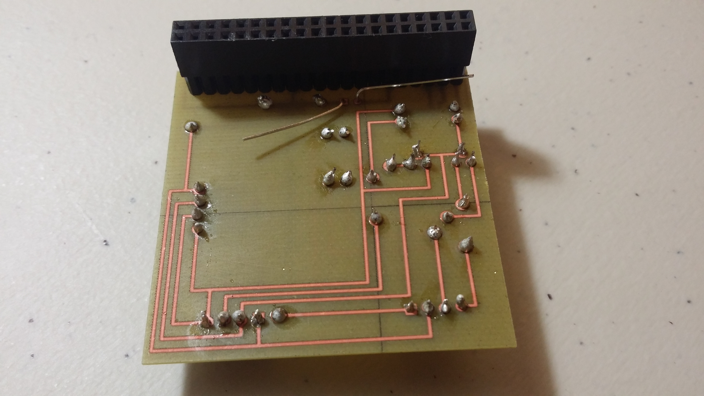